Distributions#
Well, it’s up in the mornin’ tryin’ to find a job of work
Stand in one place till your feet begin to hurt
If you got a lot o’ money you can make yourself a’merry
If you only got a nickel, it’s the Staten Island Ferry
- Bob Dylan, Hard Times in New York Town
Welcome to New York! We’ll begin our journey by getting to know one of the world’s great global cities through the lens of statistics, starting with a survey of statistical distributions.
Show code cell source
# This cell helps define the plot style for the rest of the notebook.
# I've taken some of my own liberties with regards, to style, but am
# heavily indebted to the the tufte.css style guide for much of the
# plotting & general layout of this JupyterBook.
# Check them out at: https://edwardtufte.github.io/tufte-css/
import numpy as np
import matplotlib.pyplot as plt
from matplotlib import rcParams, cycler
from matplotlib.font_manager import findfont, FontProperties
font_stack = ['et-book', 'Palatino', 'Palatino Linotype', 'Palatino LT STD',
'Book Antiqua', 'Georgia', 'DejaVu Serif']
def get_available_font():
for font in font_stack:
try:
if findfont(FontProperties(family=font)) is not None:
return font
except:
continue
return 'DejaVu Serif'
selected_font = get_available_font()
# Create a custom style dictionary with transparent elements
dark_theme = {
# Figure and background
'figure.facecolor': 'none',
'axes.facecolor': 'none',
# Save with transparent background
'savefig.transparent': True,
# Font settings
'font.family': 'serif',
'font.serif': [selected_font],
'font.size': 12,
'font.weight': 250,
# Grid settings
'grid.color': '#FFFFFF',
'grid.alpha': 0.3,
# Text colors
'text.color': '#ddd',
'axes.labelcolor': '#ddd',
'xtick.color': '#ddd',
'ytick.color': '#ddd',
# Edge colors
'axes.edgecolor': '#ddd',
# Line colors
'axes.prop_cycle': cycler(color=[
'#D1B675',
'#93C5FD',
'#B91C1C',
'#d1d1d1',
'#C3FF5B',
'#FF88FF',
'#FFD700',
'#8BE9FD'
])
}
# Apply the custom style
plt.style.use('dark_background')
plt.rcParams.update(dark_theme)
What Do Distributions Tell Us About Cities?#
Cities are symphonies of interaction - people stride through streets, businesses open and close, neighbors gossip, strangers meet on a first date, delivery vehicles weave through alleys, and somewhere, always, a toilet flushes. At first glance, these urban phenomena might appear to be chaotic, defying systemic analysis. Yet beneath the apparent cacophony often lies remarkable regularity that we can attempt to understand through the mathematical framework of statistics.
At its core, a statistical distribution represents our understanding of how values vary across a population. They allow us to describe and understand our data in a systematic way, and form the basis of a many of the predictive methods we’ll tackle later.
What fraction of buildings in Manhattan exceed 20 stories? How long do people wait for buses in Queens? How much can I hope to earn next year if I open a coffee shop in Bed Stuy? Questions like these are fundemental to the understanding of urban life, and find their answers in the shapes and patterns of statistical distributions.
Alas, data rarely come pre-packaged with labels stating “I am a Gamma Distribution.” In the real world, data are often messy, raw and discordant. Indeed, it can be convincingly argued that probability distributions don’t even exist! (Although it can’t be convincingly argued that they aren’t useful!*)
The act of matching data with a distribution tells us something fundemental about how the data originate. When we discover that wait times at intersection crossings follow an exponential distribution, we’re uncovering more than a pattern - we’re revealing the underlying mechanics of urban movement, helping build a framework that help us understand why these patterns emerge and how they might change under different conditions. This knowledge becomes invaluable for urban planning, policy-making, and the design of more livable cities.
The distribution of new building heights, for example, likely reflect a dialog between engineering constraints, economic forces, and government regulation. Changes to any of these dimensions - say the development of reliable carbon fibre reinforced concrete or to building fire codes - could have a notable impact on the distribution of new building heights.
Normal distributions often emerge from the cumulative effect of many independent, small influences, while power law distributions typically arise in systems shaped by preferential attachment or disproportionate reinforcement of advantage (aka “winner take all” scenarios).
What makes distributions particularly powerful is their universality. Similar patterns often emerge across different cities and cultures*, suggesting fundamental principles underlying urban organization. A distribution of retail store sizes in New York might mirror one in Tokyo, hinting at common economic principles at work. Yet the parameters of these distributions – their precise shapes and values – can reveal crucial differences between cities, neighborhoods, or time periods.
A Tour of Common Distributions#
Many statistics texts start with descriptive statistics (mean, standard deviation, etc.) before working up to distributions. While this may suit some introductory courses, I find it unintuitive. Descriptive statistics are imporant simplifications, but understanding when they’re appropriate and what they’re simplifying is critical, and something that I see this mistaken all too often in practice. Given most readers will know what a “mean” is, I feel strongly that starting with distributions is a more appropriate approach here.
Most statistics books also clearly divide “discrete” & “continuous” distributions. While we’ll address these differences in various contexts, given the generally large-scale of data used in modern data science, this is not a fundemental distinction for most practical purposes.
The best way to build intuition is to see examples and practice. Below, I’ve outlined a handful of statistical distributions that I believe an Urban Data Scientist should have some working familiarty with. I particularly focus on why these distributions emerge – they are not simply formulae to memorize, but clues that point us towards a deeper understanding of the underlying process. If we’re a little clever, this can help us not only predict future values, but allow us to imagine, foster, and engineer better urban systems.
We’ll start with an overview of the distributions themselves, looking at an example or two for each. We’ll then dive into how to evaluate whether our data match a given distribution. Loosely speaking, when we’re dealing with known, idealized distributions, we call this “Probability”; when we’re evaluating how to fit messy, real-world data to an idealized pattern and understanding the uncertainty involved in this fitting, this is called “Statistics.”
What follows can, admittedly, be a bit dense. It’s not meant to be fully digested in one sitting; rather, try to pull away the key points and develop a brief intuition about each distribution - look for the why. Then go out in the world, observe various phenomena, and try to see if you can identify the associated distribution.
Uniform Distributions#
The Uniform Distribution is the most basic of distributions; it is often what is colloquially meant when someone says “random*.” It assumes that all values between two end points are equally likely.
Despite this colloquial association with ‘randomness,’ uniform distributions are remarkably uncommon in the real world. Uniformity typically appears only when humans deliberately impose it through design or regulation.
When we encounter uniform distributions in cities, they often tell us something about human intervention - about our attempts to impose order on urban chaos, whether through zoning laws, transit scheduling, or urban planning guidelines.
Show code cell source
import matplotlib.pyplot as plt
import numpy as np
from scipy.stats import uniform
# Define the parameters
loc = 0
scale = 1
# Create a uniform distribution instance
dist = uniform(loc, scale)
# Generate x values that span a bit beyond the interval to see the boundaries clearly
x = np.linspace(-0.5, 1.5, 300)
# Compute the PDF values for these x values
pdf_values = dist.pdf(x)
# Create the plot
fig, ax = plt.subplots(figsize=(5, 3))
ax.plot(x, pdf_values, label='Uniform PDF')
ax.fill_between(x, pdf_values, alpha=0.2)
ax.set_ylim(-0.07, 1.15)
ax.set_xlim(-0.2, 1.2)
ax.set_title('Uniform Distribution Over [0, 1]')
ax.set_ylabel('Probability Density')
ax.grid(True, alpha=0.3)
ax.spines['top'].set_visible(False)
ax.spines['right'].set_visible(False)
plt.tight_layout()
plt.show()
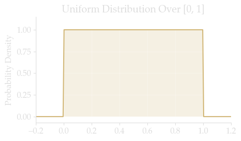
Mathematical Foundations & Assumptions#
The Uniform distribution describes a variable equally likely to take any value within an interval \([a,b]\). It’s defined by just two parameters:
\(a\): minimum value
\(b\): maximum value
And has a probability density function (PDF) of:
Key assumptions:
Constant probability density throughout the interval
Zero probability outside the interval
All intervals of equal length have equal probability
In Urban Systems#
Uniform distributions do not occur often in the natural world (which prefers normal & long-tail distributions), but we’ll see them come up in some urban contexts. Examples could include things like evenly spaced blocks in a city grid, the spatial distribution of trees or lampposts in a park, or temporal events like the likelyhood of a bus arriving at any minute in an interval.
Normal Distributions#
Mathematical Foundations and Assumptions#
The normal distribution arises from the Central Limit Theorem, which tells us that when many small, independent factors contribute additively to a phenomenon, their sum tends toward a normal distribution. Mathematically, it’s defined by two parameters: the mean (μ) and standard deviation (σ). The distribution is symmetric, with about 68% of observations falling within one standard deviation of the mean. The key assumptions include:
The variable can take any real value (positive or negative)
The distribution is symmetric around its mean
Small deviations from the mean are more common than large ones
The mean, median, and mode are identical
Emergence in Urban Systems#
The normal distribution appears in urban systems when multiple independent factors contribute to a measurement. Consider pedestrian walking speeds: numerous factors affect an individual’s pace – age, fitness, purpose of trip, weather conditions, sidewalk conditions, etc. None of these factors dominates the others, and they combine additively to produce the final walking speed.
Similarly, building floor areas within a specific category (like single-family homes built in the same decade) often follow a normal distribution because multiple independent decisions about room sizes, layouts, and configurations combine to determine the final area.
# https://data.cityofnewyork.us/resource/uvpi-gqnh.csv
import pandas as pd
from sodapy import Socrata
client = Socrata("data.cityofnewyork.us", None)
results = client.get(
'uvpi-gqnh',
where="boroname = 'Brooklyn' AND health=='Good' AND curb_loc=='OnCurb' AND spc_common=='London planetree'",
limit=50000)
census_df = pd.DataFrame.from_records(results)
WARNING:root:Requests made without an app_token will be subject to strict throttling limits.
census_df.head()
| tree_id | block_id | created_at | tree_dbh | stump_diam | curb_loc | status | health | spc_latin | spc_common | ... | boro_ct | state | latitude | longitude | x_sp | y_sp | council_district | census_tract | bin | bbl | |
|---|---|---|---|---|---|---|---|---|---|---|---|---|---|---|---|---|---|---|---|---|---|
| 0 | 189465 | 219493 | 2015-08-30T00:00:00.000 | 22 | 0 | OnCurb | Alive | Good | Platanus x acerifolia | London planetree | ... | 3019100 | New York | 40.69473314 | -73.96821054 | 993065.3039 | 192388.0651 | 35 | 191 | 3054331 | 3018880073 |
| 1 | 195265 | 227489 | 2015-09-01T00:00:00.000 | 19 | 0 | OnCurb | Alive | Good | Platanus x acerifolia | London planetree | ... | 3044000 | New York | 40.61190461 | -73.97042748 | 992460.7283 | 162211.1235 | 44 | 440 | 3173737 | 3065860055 |
| 2 | 193690 | 227528 | 2015-09-01T00:00:00.000 | 36 | 0 | OnCurb | Alive | Good | Platanus x acerifolia | London planetree | ... | 3044000 | New York | 40.61366258 | -73.97453014 | 991321.4501 | 162851.2413 | 44 | 440 | 3173500 | 3065820101 |
| 3 | 196132 | 206122 | 2015-09-02T00:00:00.000 | 19 | 0 | OnCurb | Alive | Good | Platanus x acerifolia | London planetree | ... | 3043600 | New York | 40.61293798 | -73.97671635 | 990714.5412 | 162587.0807 | 44 | 436 | 3172416 | 3065570055 |
| 4 | 192890 | 210568 | 2015-08-31T00:00:00.000 | 28 | 0 | OnCurb | Alive | Good | Platanus x acerifolia | London planetree | ... | 3054800 | New York | 40.60991608 | -73.94861133 | 998518.3471 | 161489.4477 | 48 | 548 | 3182701 | 3067870032 |
5 rows × 45 columns
results = client.get(
'hn5i-inap',
where="genusspecies = 'Platanus x acerifolia - London planetree'",
limit=50000)
tree_df = pd.DataFrame.from_records(results)
tree_df
| objectid | dbh | tpstructure | tpcondition | stumpdiameter | plantingspaceglobalid | geometry | globalid | genusspecies | createddate | location | updateddate | riskrating | riskratingdate | planteddate | |
|---|---|---|---|---|---|---|---|---|---|---|---|---|---|---|---|
| 0 | 4622808 | 19 | Full | Good | 0 | 05AA703F-7FF7-46FB-A0A9-9A99A92D3D67 | POINT (-73.9437676541679707 40.8170751138685191) | 6B685F11-F310-461C-85BD-ABF76D3F5950 | Platanus x acerifolia - London planetree | 2016-11-02 16:59:52.0000000 | {'type': 'Point', 'coordinates': [-73.94376765... | NaN | NaN | NaN | NaN |
| 1 | 427506 | 29 | Full | Good | NaN | 3ACC265D-748B-49E1-ACE9-BA5ED6F6E900 | POINT (-73.9284515899928039 40.6660572253467052) | 0DE4BB3B-1581-49F9-A743-18D58D247319 | Platanus x acerifolia - London planetree | 2015-08-15 15:27:00.0000000 | {'type': 'Point', 'coordinates': [-73.92845158... | 2018-04-24 15:37:29.0000000 | NaN | NaN | NaN |
| 2 | 120433 | 34 | Retired | Fair | NaN | 73CD42CD-D49F-4583-BBA6-2A28F870C049 | POINT (-73.8372481324947785 40.6594708670303930) | 7DE5BA6A-5FEA-43B0-A3DF-4EE3D41A3EC7 | Platanus x acerifolia - London planetree | 2015-03-27 04:00:00.0000000 | {'type': 'Point', 'coordinates': [-73.83724813... | 2021-12-22 14:26:30.0000000 | NaN | NaN | NaN |
| 3 | 116427 | 8 | Full | Good | NaN | 6F27A313-DA61-4C01-8CD5-12F7E60B64D5 | POINT (-73.9532771493112477 40.8022028774204202) | 5C4064E7-6EE9-4794-B2BB-48C72717B0AD | Platanus x acerifolia - London planetree | 2015-03-25 04:00:00.0000000 | {'type': 'Point', 'coordinates': [-73.95327714... | 2023-06-13 13:30:04.0000000 | 5 | 2023-06-13 13:30:04.0000000 | NaN |
| 4 | 369460 | 4 | Retired | Dead | NaN | 2F175476-3591-4EB5-9EA8-EE4EAFCA0D2B | POINT (-73.9325318448603923 40.6822429006121524) | 94C9CF8E-A01A-4AFA-9E4E-CA93E05B88C8 | Platanus x acerifolia - London planetree | 2015-08-09 15:01:00.0000000 | {'type': 'Point', 'coordinates': [-73.93253184... | 2021-09-09 18:31:41.0000000 | NaN | NaN | NaN |
| ... | ... | ... | ... | ... | ... | ... | ... | ... | ... | ... | ... | ... | ... | ... | ... |
| 49995 | 3346332 | 13 | Full | Fair | 0 | 61FA6251-522E-4024-B579-5B6272E7AB99 | POINT (-73.9769183131975439 40.6726105010123433) | EBF1A69D-A4B6-4C4B-8AC0-9F5F82A714A9 | Platanus x acerifolia - London planetree | 2016-05-11 19:48:48.0000000 | {'type': 'Point', 'coordinates': [-73.97691831... | 2024-04-03 15:42:24.0000000 | 8 | 2024-04-03 15:42:25.0000000 | NaN |
| 49996 | 3346673 | NaN | Stump | Dead | 23 | 95ECE1DD-249E-4DE2-9D34-85E6F0F2C1DA | POINT (-73.8990301513581045 40.6970877876470780) | 55D13461-6EE1-49F5-AC8B-0C05F8BABCEB | Platanus x acerifolia - London planetree | 2016-05-11 20:26:00.0000000 | {'type': 'Point', 'coordinates': [-73.89903015... | 2024-02-26 13:16:11.0000000 | 8 | 2020-12-03 14:38:00.0000000 | NaN |
| 49997 | 3345632 | 19 | Full | Fair | NaN | 9159B35F-648A-4A1C-8046-E9954CB2613F | POINT (-73.9743315497501470 40.6731547177459021) | 709DDD48-D13A-4686-BF59-84837CB4A78F | Platanus x acerifolia - London planetree | 2016-05-11 19:43:20.0000000 | {'type': 'Point', 'coordinates': [-73.97433154... | 2024-03-27 18:57:45.0000000 | 8 | 2024-03-27 18:57:45.0000000 | NaN |
| 49998 | 3024440 | 29 | Full | Fair | NaN | 8F48E833-BB5F-4E4E-BFE0-3166446C0B8F | POINT (-73.9960987550073810 40.6864813763342354) | 3F0E53EE-B6F2-4BC6-8A50-9F7BE6257871 | Platanus x acerifolia - London planetree | 2016-04-04 11:16:35.0000000 | {'type': 'Point', 'coordinates': [-73.99609875... | 2022-02-28 19:14:09.0000000 | 6 | 2022-02-28 19:14:09.0000000 | NaN |
| 49999 | 2966803 | 24 | Full | Fair | NaN | 4C44A4D4-C2D8-495A-9D94-AC918596E9B2 | POINT (-74.0046291777526761 40.6167757595809888) | 6500FBF2-7CB2-4189-A0DC-044E2A82B388 | Platanus x acerifolia - London planetree | 2016-03-29 12:22:00.0000000 | {'type': 'Point', 'coordinates': [-74.00462917... | 2022-07-14 19:19:45.0000000 | 8 | 2022-07-14 19:19:45.0000000 | NaN |
50000 rows × 15 columns
m_df = tree_df.merge(census_df, how='inner', right_on='tree_id', left_on='objectid')
m_df.tpcondition.value_counts
<bound method IndexOpsMixin.value_counts of 0 Good
1 Fair
2 Dead
3 Fair
4 Good
...
238 Fair
239 Fair
240 Excellent
241 Good
242 Good
Name: tpcondition, Length: 243, dtype: object>
import seaborn as sns
bk_tree_df = results_df[
(results_df.boroname=='Brooklyn')
& (results_df.tree_dbh.astype(int)<=41)
& (results_df.spc_common=='London planetree')
& (results_df.guards=='None')
# & (results_df.spc_common=='tree of heaven')
].copy()
f, ax = plt.subplots(figsize=(8, 5))
sns.histplot(bk_tree_df.tree_dbh.astype(int), binwidth=1)
---------------------------------------------------------------------------
NameError Traceback (most recent call last)
Cell In[9], line 1
----> 1 bk_tree_df = results_df[
2 (results_df.boroname=='Brooklyn')
3 & (results_df.tree_dbh.astype(int)<=41)
4 & (results_df.spc_common=='London planetree')
5 & (results_df.guards=='None')
6 # & (results_df.spc_common=='tree of heaven')
7 ].copy()
9 f, ax = plt.subplots(figsize=(8, 5))
10 sns.histplot(bk_tree_df.tree_dbh.astype(int), binwidth=1)
NameError: name 'results_df' is not defined
tree_id
bk_tree_df.guards.value_counts()
guards
None 12012
Helpful 689
Harmful 287
Unsure 137
Name: count, dtype: int64
for i in results_df.spc_common.value_counts().index:
print(i)
# spc_common
# status
# curb_loc
# Diameter of the tree, measured at approximately 54" / 137cm above the ground.
London planetree
honeylocust
pin oak
Japanese zelkova
Callery pear
littleleaf linden
Sophora
ginkgo
cherry
Norway maple
American linden
green ash
swamp white oak
American elm
northern red oak
silver linden
sweetgum
red maple
Chinese elm
silver maple
'Schubert' chokecherry
Kentucky coffeetree
purple-leaf plum
dawn redwood
golden raintree
Japanese tree lilac
crimson king maple
sawtooth oak
willow oak
Amur maackia
eastern redbud
bald cypress
crab apple
English oak
hedge maple
scarlet oak
Schumard's oak
common hackberry
white oak
hawthorn
sycamore maple
sugar maple
black oak
European hornbeam
Siberian elm
black locust
maple
hardy rubber tree
ash
American hornbeam
flowering dogwood
serviceberry
American hophornbeam
white ash
eastern redcedar
shingle oak
Amur maple
tulip-poplar
Cornelian cherry
katsura tree
mulberry
tree of heaven
black cherry
bur oak
horse chestnut
Japanese hornbeam
paper birch
river birch
blackgum
silver birch
Kentucky yellowwood
Japanese maple
black walnut
Atlantic white cedar
Chinese tree lilac
Turkish hazelnut
pagoda dogwood
mimosa
magnolia
arborvitae
pond cypress
kousa dogwood
crepe myrtle
cockspur hawthorn
Japanese snowbell
American beech
Persian ironwood
Chinese chestnut
Norway spruce
catalpa
Oklahoma redbud
cucumber magnolia
paperbark maple
Chinese fringetree
two-winged silverbell
weeping willow
sassafras
Amur cork tree
pine
false cypress
European beech
Atlas cedar
eastern cottonwood
Douglas-fir
empress tree
red pine
eastern hemlock
southern magnolia
white pine
holly
spruce
black maple
southern red oak
quaking aspen
bigtooth aspen
Ohio buckeye
pignut hickory
tartar maple
Shantung maple
boxelder
trident maple
red horse chestnut
smoketree
pitch pine
American larch
European alder
Himalayan cedar
blue spruce
Osage-orange
black pine
Scots pine
Virginia pine
Show code cell source
import matplotlib.pyplot as plt
import numpy as np
from matplotlib import rcParams, cycler
from matplotlib.font_manager import findfont, FontProperties
font_stack = ['et-book', 'Palatino', 'Palatino Linotype', 'Palatino LT STD',
'Book Antiqua', 'Georgia', 'DejaVu Serif']
def get_available_font():
for font in font_stack:
try:
if findfont(FontProperties(family=font)) is not None:
return font
except:
continue
return 'DejaVu Serif'
selected_font = get_available_font()
# Create a custom style dictionary with transparent elements
dark_theme = {
# Figure and background
'figure.facecolor': 'none',
'axes.facecolor': 'none',
# Save with transparent background
'savefig.transparent': True,
# Font settings
'font.family': 'serif',
'font.serif': [selected_font],
'font.size': 12,
'font.weight': 250,
# Grid settings
'grid.color': '#FFFFFF',
'grid.alpha': 0.3,
# Text colors
'text.color': '#ddd',
'axes.labelcolor': '#ddd',
'xtick.color': '#ddd',
'ytick.color': '#ddd',
# Edge colors
'axes.edgecolor': '#ddd',
# Line colors
'axes.prop_cycle': cycler(color=[
'#93C5FD',
'#D1B675',
'#d1d1d1',
'#B91C1C',
'#C3FF5B',
'#FF88FF',
'#FFD700',
'#8BE9FD'
])
}
# Apply the custom style
plt.style.use('dark_background')
plt.rcParams.update(dark_theme)
import numpy as np
import matplotlib.pyplot as plt
from scipy import stats
# --- Simulate Uniform Data over [a, b] ---
a, b = 0, 10
data = np.random.uniform(a, b, size=1000)
data_range = b - a
# Expected statistics
expected_mean = (a + b) / 2
expected_var = (data_range ** 2) / 12
print("Expected Mean:", expected_mean)
print("Expected Variance:", expected_var)
# --- Kolmogorov-Smirnov (KS) Test ---
# When testing, note that scipy.stats.uniform is defined with parameters: loc=a, scale=b-a.
ks_stat, ks_p = stats.kstest(data, 'uniform', args=(a, data_range))
print("KS Test Statistic:", ks_stat)
print("KS p-value:", ks_p)
# --- Chi-Square Test ---
# Use a histogram to compare observed counts to the expected uniform counts.
hist, bin_edges = np.histogram(data, bins='auto')
chi2_stat, chi2_p = stats.chisquare(hist)
print("Chi-Square Statistic:", chi2_stat)
print("Chi-Square p-value:", chi2_p)
# --- Plotting: Histogram vs. Expected Uniform Density ---
fig, ax = plt.subplots(figsize=(8, 5))
ax.hist(data, bins='auto', density=True, alpha=0.7, label='Empirical Density')
ax.axhline(y=1/data_range, color='r', linestyle='--', label='Expected Uniform Density')
ax.set_title('Histogram vs. Uniform Density')
ax.set_xlabel('Value')
ax.set_ylabel('Density')
ax.legend()
plt.tight_layout()
plt.show()
# --- Plotting: Q-Q Plot ---
# Compare the quantiles of the observed data to those of a uniform distribution.
fig, ax = plt.subplots(figsize=(8, 5))
stats.probplot(data, dist=stats.uniform(loc=a, scale=data_range), plot=ax)
ax.set_title('Q-Q Plot: Data vs. Uniform Distribution')
plt.show()
Expected Mean: 5.0
Expected Variance: 8.333333333333334
KS Test Statistic: 0.02391253466587384
KS p-value: 0.6080449188690945
Chi-Square Statistic: 10.283999999999999
Chi-Square p-value: 0.41594033172331346
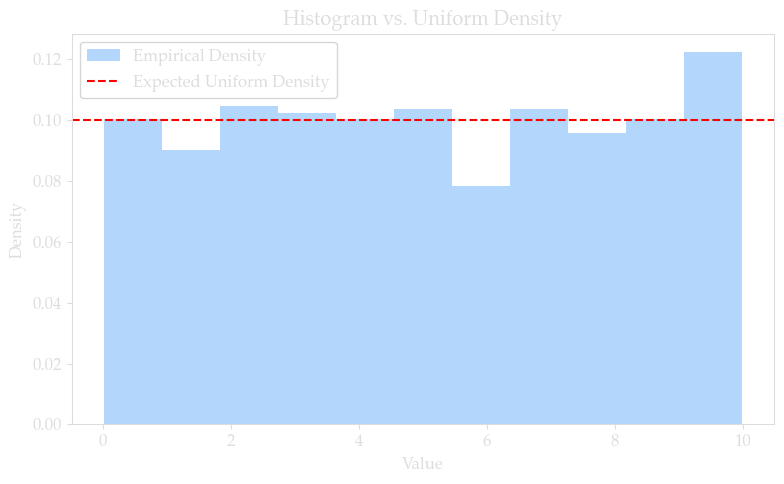
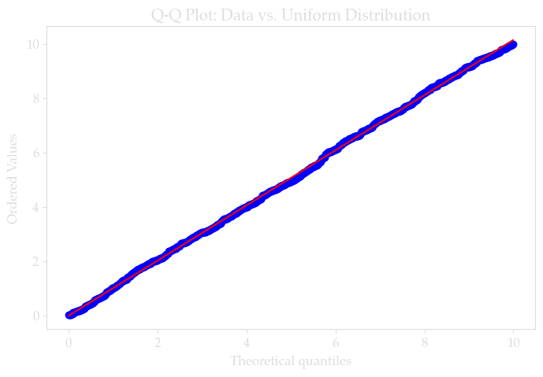
def estimate_uniform_parameters(data, method='mle', trim_quantile=0.01):
"""
Estimate parameters for a uniform distribution.
Parameters:
data (array-like): Observations.
method (str): 'mle' (default), 'robust', or 'bayesian'.
trim_quantile (float): Quantile for trimming in robust estimation.
Returns:
tuple: (a, b) estimates.
"""
data = np.asarray(data)
if method == 'mle':
return np.min(data), np.max(data)
elif method == 'robust':
lower = np.quantile(data, trim_quantile)
upper = np.quantile(data, 1 - trim_quantile)
return lower, upper
elif method == 'bayesian':
# A simplistic Bayesian approach with an uninformative prior.
n = len(data)
return np.min(data) - np.min(data)/n, np.max(data) + np.max(data)/n
else:
raise ValueError("Method must be 'mle', 'robust', or 'bayesian'")
a_est, b_est = estimate_uniform_parameters(data, method='mle')
print("Estimated parameters: a =", a_est, ", b =", b_est)
Estimated parameters: a = 0.00855965570862205 , b = 9.992375777355868
def test_uniformity(data, alpha=0.05):
"""
Tests the hypothesis that data come from a uniform distribution.
Parameters:
data (array-like): Observations.
alpha (float): Significance level.
Returns:
dict: Test statistics and a boolean flag for uniformity.
"""
data = np.asarray(data)
a, b = np.min(data), np.max(data)
data_range = b - a
# Scale data to [0,1]
scaled_data = (data - a) / data_range
# KS Test for uniformity on [0,1]
ks_stat, ks_p = stats.kstest(scaled_data, 'uniform')
# Chi-square Test using histogram counts
hist, _ = np.histogram(scaled_data, bins='auto')
chi2_stat, chi2_p = stats.chisquare(hist)
return {
'ks_test': {'statistic': ks_stat, 'p_value': ks_p},
'chi_square': {'statistic': chi2_stat, 'p_value': chi2_p},
'is_uniform': (ks_p > alpha) and (chi2_p > alpha)
}
results = test_uniformity(data)
print("Uniformity Test Results:", results)
Uniformity Test Results: {'ks_test': {'statistic': 0.024413447218922024, 'p_value': 0.5816025419125916}, 'chi_square': {'statistic': 10.283999999999999, 'p_value': 0.41594033172331346}, 'is_uniform': True}
Show code cell source
def create_plot():
fig, ax = plt.subplots(figsize=(7, 4.5))
# Generate some sample data
x = np.linspace(0, 10, 100)
ax.plot(x, np.sin(x), label='Sin(x)')
ax.plot(x, np.cos(x), label='Cos(x)')
ax.plot(x, 0.3 * np.sin(x), label='Tan(x)')
ax.plot(x, 0.5 * np.cos(x), label='2*Cos(x)')
# Demonstrate various text elements
ax.set_title('Typography Example with ' + selected_font, pad=20)
ax.set_xlabel('Time (τ)') # Using Greek letter
ax.set_ylabel('Amplitude (α)') # Using Greek letter
# Add some mathematical notation
ax.text(0.5, 0.95, r'$f(x) = \sin(x) + \cos(x)$',
transform=ax.transAxes,
fontsize=10,
horizontalalignment='center')
ax.grid(True, alpha=0.2)
ax.set_ylim(-1.12, 1.18)
ax.legend(framealpha=0.8)
plt.tight_layout()
plt.show()
create_plot()
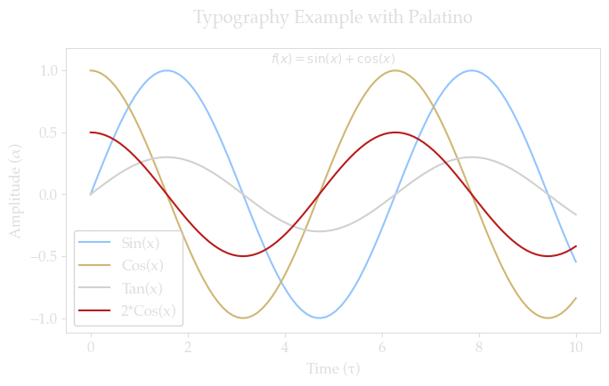
https://medium.com/nycwater/the-big-flush-on-super-bowl-sunday-e0050699fa1b
We’ll begin our journey in New York
Why start with distributions? Generally, they’re the truth that descriptive statistics is trying to describe. Before simply looking at a mean, median, or 95th percentile of a dataset, we should know a few things about the underlying distribution that it’s likely coming from.
The goal here is to understand what these distributions are, and how to apply them in the context of cities. We’ll cover some of the math, but long proofs are not the main focus of this book.
Power Law Distribution
City size distributions (Zipf’s Law) Income distributions within cities Business size distributions Social network connections in urban areas
Poisson Distribution
Traffic arrivals at intersections Public transit passenger arrivals Service requests to city agencies Crime incidents in neighborhoods Emergency service calls
Normal Distribution
Housing prices (often log-normal) Building heights Commute times Environmental measurements (air quality, noise levels) Demographics (age distributions)
Exponential Distribution
Wait times (public services, transit) Building age Distance between urban amenities Duration of parking occupancy
Weibull Distribution
Infrastructure failure rates Building lifetime/deterioration Peak energy demand patterns Extreme weather events affecting urban systems
Beta Distribution
Proportions of land use types Demographic ratios Satisfaction scores with urban services Environmental quality indices
Gamma Distribution
Rainfall patterns affecting urban drainage Travel time reliability Energy consumption patterns Property values
Negative Binomial Distribution
Clustering of urban phenomena (retail locations) Repeat service calls from same address Traffic accidents at specific intersections Multiple trips to same destination More flexible than Poisson for “overdispersed” count data
Log-logistic Distribution
Property sale times Infrastructure project completion times Innovation diffusion through cities Urban-rural migration patterns
Multinomial Distribution
Modal split in transportation Housing type distributions Land use classification Occupation distributions across neighborhoods Voting patterns by district
Student’s t-Distribution
Small sample urban indicators Neighborhood-level statistics Quality of life measurements Air quality sampling with limited sensors
Geometric Distribution
Number of attempts until successful housing match Bus bunching patterns Sequential vacancy fillings Time until infrastructure failure
Zero-Inflated Distribution (modification of count distributions)
Bike-share usage at stations Parking violations Business complaints Many urban phenomena with excess zeros
Hypergeometric Distribution
Sampling without replacement in urban audits Demographic representation in city services School assignment processes Resource allocation across districts
Burr Distribution (versatile for skewed data)
Income inequality within neighborhoods Property size distributions Urban-rural wealth gradients Business revenue distributions More flexible than log-normal for heavy tails
Discrete Uniform Distribution
Floor numbers in buildings Public transit route numbers Administrative district numbering Parking space assignments Random sampling in urban audits
Gumbel Distribution (extreme value type I)
Maximum daily traffic flows Extreme temperature events Peak urban flooding levels Maximum daily energy demand Urban heat island extremes
Bivariate Normal Distribution
Spatial distribution of urban amenities Crime hotspot analysis Pedestrian movement patterns Air pollution dispersion Spatial correlation in housing prices
Log-Normal Distribution
House prices and real estate values (one of the most classic applications) City sizes (alternative to power law/Zipf’s - ongoing debate in urban scaling literature) Income distributions within cities (especially when looking at smaller geographic units) Business sizes (number of employees, revenue) Building heights Commute distances (due to multiplicative effects of choices) Rent prices Land parcel sizes Population density variations
Further Reading#
Chapter 1: Distributions in the City#
1.1 Understanding Statistical Distributions#
A statistical distribution describes how values of a variable are distributed. It provides a function that shows the possible values for a variable and how often they occur. Understanding the underlying distribution of data is crucial for:
Modeling and Prediction: Choosing the right distribution improves the accuracy of models.
Hypothesis Testing: Many statistical tests assume specific distributions.
Risk Assessment: Knowing the distribution helps in estimating probabilities of extreme events.
In urban contexts, distributions help us answer questions like:
What is the probability that a taxi will have more than 10 rides in an hour?
How likely is it for a building to exceed a certain height?
What is the expected number of emergency calls during peak hours?
import numpy as np
import matplotlib.pyplot as plt
from scipy.stats import poisson
# Average number of emergency calls per hour
lambda_rate = 5
# Possible number of calls
k = np.arange(0, 15)
# PMF
pmf = poisson.pmf(k, lambda_rate)
plt.bar(k, pmf)
plt.title('Poisson Distribution of Emergency Calls per Hour')
plt.xlabel('Number of Calls')
plt.ylabel('Probability')
plt.show()
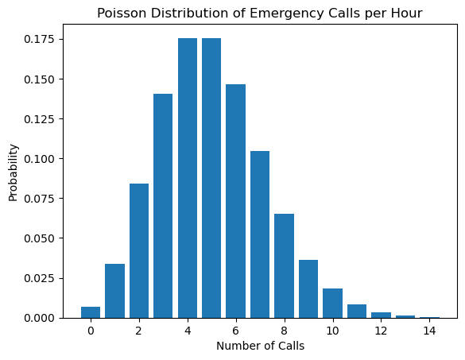
from scipy.stats import binom
# Number of trials (sample size)
n = 10
# Probability of success (taking the subway)
p = 0.7
# Possible number of successes
k = np.arange(0, n + 1)
# PMF
pmf = binom.pmf(k, n, p)
plt.bar(k, pmf)
plt.title('Binomial Distribution of Subway Commuters')
plt.xlabel('Number of People Taking the Subway')
plt.ylabel('Probability')
plt.show()
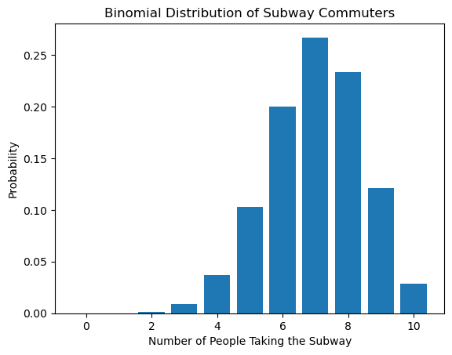
import numpy as np
import matplotlib.pyplot as plt
from scipy.stats import norm
# Sample data: Building heights (in meters)
np.random.seed(0)
building_heights = np.random.normal(loc=70, scale=10, size=1000)
# Plotting the histogram and PDF
plt.hist(building_heights, bins=30, density=True, alpha=0.6, color='g')
# Plot the PDF
xmin, xmax = plt.xlim()
x = np.linspace(xmin, xmax, 100)
p = norm.pdf(x, building_heights.mean(), building_heights.std())
plt.plot(x, p, 'k', linewidth=2)
plt.title('Normal Distribution of Building Heights')
plt.xlabel('Height (meters)')
plt.ylabel('Density')
plt.show()
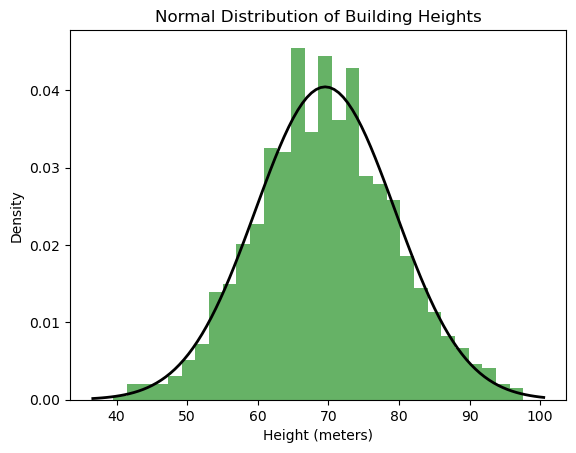
import numpy as np
import matplotlib.pyplot as plt
from scipy.stats import lognorm
# Sample data: Individual incomes (in thousands of dollars)
np.random.seed(0)
incomes = np.random.lognormal(mean=10, sigma=0.5, size=1000)
# Plotting the histogram
plt.hist(incomes, bins=50, density=True, alpha=0.6, color='b')
# Plot the PDF
shape, loc, scale = lognorm.fit(incomes, floc=0)
x = np.linspace(min(incomes), max(incomes), 1000)
pdf = lognorm.pdf(x, shape, loc=loc, scale=scale)
plt.plot(x, pdf, 'r', linewidth=2)
plt.title('Log-Normal Distribution of Individual Incomes')
plt.xlabel('Income (thousands of dollars)')
plt.ylabel('Density')
plt.show()
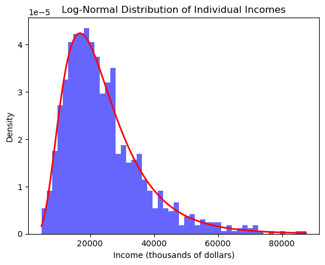
from scipy.stats import expon
# Sample data: Time between bus arrivals (in minutes)
np.random.seed(0)
interarrival_times = np.random.exponential(scale=5, size=1000)
# Plotting the histogram
plt.hist(interarrival_times, bins=30, density=True, alpha=0.6, color='c')
# Plot the PDF
x = np.linspace(0, max(interarrival_times), 1000)
pdf = expon.pdf(x, scale=interarrival_times.mean())
plt.plot(x, pdf, 'r', linewidth=2)
plt.title('Exponential Distribution of Bus Interarrival Times')
plt.xlabel('Time (minutes)')
plt.ylabel('Density')
plt.show()
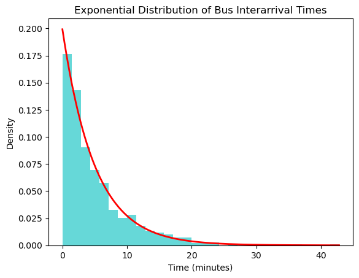
from scipy.stats import weibull_min
# Sample data: Wind speeds (in m/s)
np.random.seed(0)
wind_speeds = weibull_min.rvs(c=2, scale=10, size=1000)
# Plotting the histogram
plt.hist(wind_speeds, bins=30, density=True, alpha=0.6, color='m')
# Plot the PDF
x = np.linspace(0, max(wind_speeds), 1000)
pdf = weibull_min.pdf(x, c=2, scale=10)
plt.plot(x, pdf, 'r', linewidth=2)
plt.title('Weibull Distribution of Wind Speeds in NYC')
plt.xlabel('Wind Speed (m/s)')
plt.ylabel('Density')
plt.show()
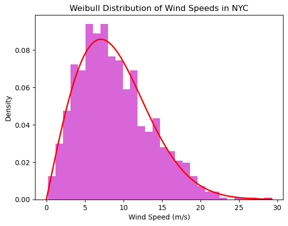
from scipy.stats import beta
# Sample data: Proportion of green space
np.random.seed(0)
green_space = beta.rvs(a=2, b=5, size=1000)
# Plotting the histogram
plt.hist(green_space, bins=30, density=True, alpha=0.6, color='g')
# Plot the PDF
x = np.linspace(0, 1, 1000)
pdf = beta.pdf(x, a=2, b=5)
plt.plot(x, pdf, 'r', linewidth=2)
plt.title('Beta Distribution of Green Space Proportions')
plt.xlabel('Proportion of Green Space')
plt.ylabel('Density')
plt.show()
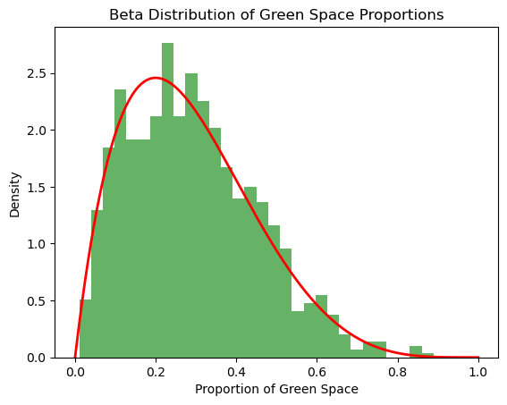
from scipy.stats import gamma
# Sample data: Taxi trip durations (in minutes)
np.random.seed(0)
trip_durations = gamma.rvs(a=2, scale=5, size=1000)
# Plotting the histogram
plt.hist(trip_durations, bins=30, density=True, alpha=0.6, color='y')
# Plot the PDF
x = np.linspace(0, max(trip_durations), 1000)
params = gamma.fit(trip_durations, floc=0)
pdf = gamma.pdf(x, *params)
plt.plot(x, pdf, 'r', linewidth=2)
plt.title('Gamma Distribution of Taxi Trip Durations')
plt.xlabel('Duration (minutes)')
plt.ylabel('Density')
plt.show()
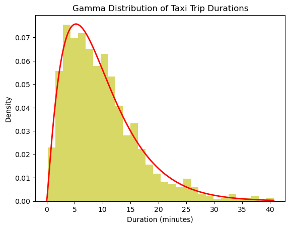
# Sample data: City block sizes (in square meters)
np.random.seed(0)
block_sizes = (np.random.pareto(a=3, size=1000) + 1) * 1000 # Shift and scale
# Plotting the histogram
counts, bins, _ = plt.hist(block_sizes, bins=np.logspace(np.log10(1000), np.log10(100000), 50), density=True, alpha=0.6, color='r')
plt.xscale('log')
plt.yscale('log')
plt.title('Power Law Distribution of City Block Sizes')
plt.xlabel('Block Size (square meters)')
plt.ylabel('Density')
plt.show()
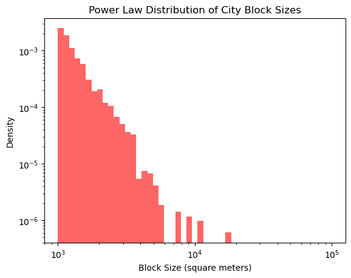
import numpy as np
import matplotlib.pyplot as plt
import scipy.stats as stats
# Sample data: Taxi trip durations (in minutes)
np.random.seed(0)
trip_durations = gamma.rvs(a=2, scale=5, size=1000)
# QQ Plot against a gamma distribution
stats.probplot(trip_durations, dist="gamma", sparams=(2,), plot=plt)
plt.title('QQ Plot of Trip Durations vs. Gamma Distribution')
plt.show()
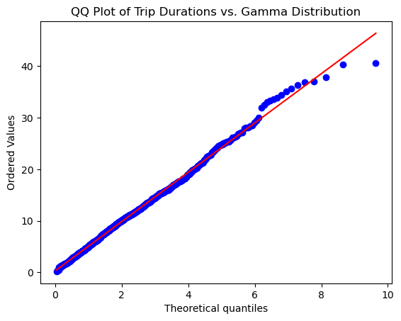
from scipy.stats import kstest, gamma
# Test if trip durations follow a gamma distribution
params = gamma.fit(trip_durations, floc=0)
ks_statistic, p_value = kstest(trip_durations, 'gamma', args=params)
print(f"K-S Statistic: {ks_statistic}")
print(f"P-Value: {p_value}")
K-S Statistic: 0.015411635016448266
P-Value: 0.9685428012852954
# Fit different distributions
params_gamma = gamma.fit(trip_durations, floc=0)
params_lognorm = lognorm.fit(trip_durations, floc=0)
params_weibull = weibull_min.fit(trip_durations, floc=0)
params_expon = expon.fit(trip_durations, floc=0)
# Calculate log-likelihood
ll_gamma = np.sum(gamma.logpdf(trip_durations, *params_gamma))
ll_lognorm = np.sum(lognorm.logpdf(trip_durations, *params_lognorm))
ll_weibull = np.sum(weibull_min.logpdf(trip_durations, *params_weibull))
ll_expon = np.sum(expon.logpdf(trip_durations, *params_expon))
# Calculate AIC
aic_gamma = 2 * len(params_gamma) - 2 * ll_gamma
aic_lognorm = 2 * len(params_lognorm) - 2 * ll_lognorm
aic_weibull = 2 * len(params_weibull) - 2 * ll_weibull
aic_expon = 2 * len(params_expon) - 2 * ll_expon
print(f"AIC (Gamma): {aic_gamma}")
print(f"AIC (Log-Normal): {aic_lognorm}")
print(f"AIC (Weibull): {aic_weibull}")
print(f"AIC (Exponential): {aic_expon}")
AIC (Gamma): 6303.959436803516
AIC (Log-Normal): 6382.132524209535
AIC (Weibull): 6321.537562684305
AIC (Exponential): 6574.443081580004
import pandas as pd
df = pd.DataFrame(trip_durations, columns=['trip_duration'])
trip_durations = df['trip_duration']
plt.hist(trip_durations, bins=50, density=True, alpha=0.6, color='g')
plt.title('Histogram of NYC Taxi Trip Durations')
plt.xlabel('Duration (minutes)')
plt.ylabel('Density')
plt.show()
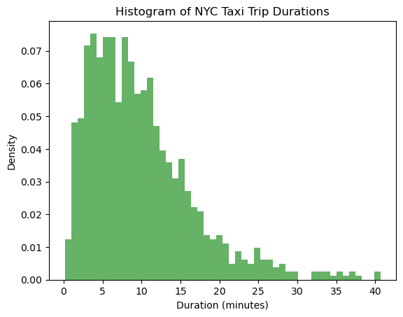
mean_duration = trip_durations.mean()
variance_duration = trip_durations.var()
skewness_duration = trip_durations.skew()
kurtosis_duration = trip_durations.kurtosis()
print(f"Mean: {mean_duration}")
print(f"Variance: {variance_duration}")
print(f"Skewness: {skewness_duration}")
print(f"Kurtosis: {kurtosis_duration}")
Mean: 9.827863255447474
Variance: 45.45494635184176
Skewness: 1.3603737061808123
Kurtosis: 2.42602524275726
from scipy.stats import gamma, lognorm, weibull_min, expon
# Fit Gamma
params_gamma = gamma.fit(trip_durations, floc=0)
ll_gamma = np.sum(gamma.logpdf(trip_durations, *params_gamma))
aic_gamma = 2 * len(params_gamma) - 2 * ll_gamma
# Fit Log-Normal
params_lognorm = lognorm.fit(trip_durations, floc=0)
ll_lognorm = np.sum(lognorm.logpdf(trip_durations, *params_lognorm))
aic_lognorm = 2 * len(params_lognorm) - 2 * ll_lognorm
# Fit Weibull
params_weibull = weibull_min.fit(trip_durations, floc=0)
ll_weibull = np.sum(weibull_min.logpdf(trip_durations, *params_weibull))
aic_weibull = 2 * len(params_weibull) - 2 * ll_weibull
# Fit Exponential
params_expon = expon.fit(trip_durations, floc=0)
ll_expon = np.sum(expon.logpdf(trip_durations, *params_expon))
aic_expon = 2 * len(params_expon) - 2 * ll_expon
print(f"AIC (Gamma): {aic_gamma}")
print(f"AIC (Log-Normal): {aic_lognorm}")
print(f"AIC (Weibull): {aic_weibull}")
print(f"AIC (Exponential): {aic_expon}")
AIC (Gamma): 6303.959436803516
AIC (Log-Normal): 6382.132524209535
AIC (Weibull): 6321.537562684305
AIC (Exponential): 6574.443081580004
# K-S test for Gamma
ks_statistic, p_value = kstest(trip_durations, 'gamma', args=params_gamma)
print(f"K-S Statistic (Gamma): {ks_statistic}")
print(f"P-Value: {p_value}")
# QQ Plot
import scipy.stats as stats
stats.probplot(trip_durations, dist="gamma", sparams=(params_gamma[0],), plot=plt)
plt.title('QQ Plot of Trip Durations vs. Gamma Distribution')
plt.show()
K-S Statistic (Gamma): 0.015411635016448266
P-Value: 0.9685428012852954
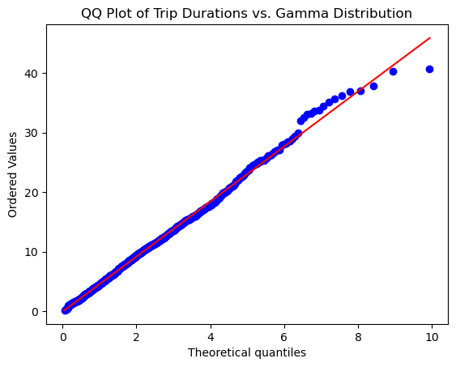
# K-S test for Normal distribution
ks_statistic, p_value = stats.kstest(trip_durations, 'norm')
print(f"K-S Statistic (Normal): {ks_statistic}")
print(f"P-Value: {p_value}")
# QQ Plot for Normal distribution
stats.probplot(trip_durations, dist="norm", plot=plt)
plt.title('QQ Plot of Trip Durations vs. Normal Distribution')
plt.show()
K-S Statistic (Normal): 0.91884317007884
P-Value: 0.0
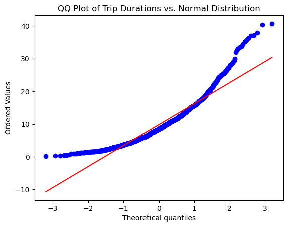
Chapter 1: Distributions in the City#
1.1 Understanding Statistical Distributions#
Introduction#
In urban data science, statistical distributions are fundamental tools for understanding and modeling the variability inherent in city-related data. Whether we’re analyzing the number of taxi rides in New York City on a given day, the distribution of building heights, or the frequency of subway arrivals, statistical distributions help us make sense of complex urban phenomena.
This chapter introduces the concept of statistical distributions, explores their key characteristics through distribution moments, and provides guidance on identifying the appropriate distribution for a given dataset. We will use examples from New York City to illustrate these concepts, along with Python code to demonstrate practical applications.
1.1.1 What Is a Statistical Distribution?#
A statistical distribution describes how values of a variable are distributed. It provides a function that shows the possible values for a variable and how often they occur. Understanding the underlying distribution of data is crucial for:
Modeling and Prediction: Choosing the right distribution improves the accuracy of models.
Hypothesis Testing: Many statistical tests assume specific distributions.
Risk Assessment: Knowing the distribution helps in estimating probabilities of extreme events.
In urban contexts, distributions help us answer questions like:
What is the probability that a taxi will have more than 10 rides in an hour?
How likely is it for a building to exceed a certain height?
What is the expected number of emergency calls during peak hours?
1.1.2 Distribution Moments: The Building Blocks#
Distribution moments are quantitative measures that capture key characteristics of a distribution. The most commonly used moments are:
Mean (First Moment): Measures the central tendency.
Variance (Second Moment): Measures the dispersion or spread.
Skewness (Third Moment): Measures the asymmetry.
Kurtosis (Fourth Moment): Measures the “tailedness” or peak sharpness.
Understanding these moments provides insights into the data’s behavior and aids in selecting appropriate statistical models.
Mean#
The mean is the average value of the dataset.
Variance#
Variance quantifies how much the values deviate from the mean.
Skewness#
Skewness indicates the degree of asymmetry.
Positive Skew: Tail on the right side.
Negative Skew: Tail on the left side.
Kurtosis#
Kurtosis measures the heaviness of the tails.
Leptokurtic: Heavy tails (positive kurtosis).
Platykurtic: Light tails (negative kurtosis).
Mesokurtic: Normal tails (zero kurtosis, as in the normal distribution).
1.1.3 Common Distributions in Urban Data#
Urban phenomena often follow specific statistical distributions. Here we present common distributions in an order that progresses from discrete to continuous, and from simple to more complex distributions.
Poisson Distribution#
Type: Discrete
Use Case: Modeling the number of times an event occurs in a fixed interval of time or space.
Example: Number of emergency calls received by NYC’s 911 system per hour.
The probability mass function (PMF) is:
where:
( \lambda ) is the average rate (mean number of occurrences in the interval).
( k ) is the actual number of occurrences.
import numpy as np
import matplotlib.pyplot as plt
from scipy.stats import poisson
# Average number of emergency calls per hour
lambda_rate = 5
# Possible number of calls
k = np.arange(0, 15)
# PMF
pmf = poisson.pmf(k, lambda_rate)
plt.bar(k, pmf)
plt.title('Poisson Distribution of Emergency Calls per Hour')
plt.xlabel('Number of Calls')
plt.ylabel('Probability')
plt.show()
Binomial Distribution#
Type: Discrete
Use Case: Modeling the number of successes in a fixed number of independent Bernoulli trials.
Example: Number of commuters who choose to take the subway out of a random sample of people.
The probability mass function is:
where:
( n ) is the number of trials.
( k ) is the number of successes.
( p ) is the probability of success on a single trial.
"Poisson, simple exponential, stretched exponential, and power law distributions. The remaining distributions in Table 4.2 are occasionally used to fit the degrees of some networks, despite the fact that we lack theoretical basis for their relevance for networks."
- Barabasi, Ch.4 on network science related distributions
Cell In[1], line 2
- Barabasi, Ch.4 on
^
SyntaxError: invalid syntax
from scipy.stats import binom
# Number of trials (sample size)
n = 10
# Probability of success (taking the subway)
p = 0.7
# Possible number of successes
k = np.arange(0, n + 1)
# PMF
pmf = binom.pmf(k, n, p)
plt.bar(k, pmf)
plt.title('Binomial Distribution of Subway Commuters')
plt.xlabel('Number of People Taking the Subway')
plt.ylabel('Probability')
plt.show()